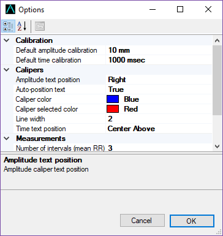

Options
Options
Changing options
Options can be selected using the Tools | Options menu item. You can change default settings as you prefer, including caliper colors, line width of the calipers, default calibration intervals and number of intervals used to calculate mean intervals. For example, if you usually use just 1 RR interval to calculate the QTc, set the number of mean RR intervals for the QTc measurement to 1 interval. Remember though you can override any of these values when you actually do the measurements.

Figure 1: Options dialog
Options explained
- Caliper color This is the color of unselected newly added calipers. Note that this color can be overwritten by right-clicking on a caliper and selecting Caliper Color.
- Selected caliper color This is the color of the selected caliper.
- Line width Increase or decrease this value to make the caliper lines thicker or thinner.
- Time calibration This is the default value that appears in the text box when calibrating time calipers. If you usually calibrate to a certain value (say 200 msec) then it is useful to change this default value.
- Amplitude calibration This is the default value for calibration of amplitude calipers. Put whatever value you usually use to calibrate here.
- Number of intervals (mean RR) The default number of intervals you use to measure mean RR intervals.
- Number of intervals (QTc) The default number of intervals you use to measure the mean RR interval when making QTc measurements.
- QTc formula Select the QTc formula you want to use for QTc calculations. The 4 most commonly used formulas are available: Bazett, Framingham, Fridercia, and Hodges. Selecting All will display the results of all 4 formulas when calculating the QTc.
- Round msec and rates Rounds intervals in msec to the nearest msec and heart rates to the nearest bpm. If unchecked, values are shown with higher precision using up to 3 decimal places. Note that values in secs or values using other units are never rounded regardless of this option.
- Show handles with transparent mode Handles will appear when you enter transparent mode. Note that once handles appear, you will need to turn them off using the Caliper | Show handles menu item to make them disappear again, even if you return to image mode
- Show handles with image mode Handles will appear on all calipers when you start the program. These handles will persist until they are turned off using the Caliper | Show handles menu item.
- Transparent window at start Set this if you want the app to always start off with a transparent window.
- Use alternative transparency On newer versions of Windows 10 (the Creators Update, version 1709, and possible other versions), full transparency doesn't seem to work. Symptoms include not being able to move calipers or click buttons while in transparent window mode. If this happens, set this option to True. Transparency will make the whole window semi-transparent. You can adjust how transparent the window is using the Transparency alpha value setting.
- Transparency alpha value When using alternative transparency, you can set the window very transparent to not too transparent by varying this value from 0.2-0.8.
- Transparent window on top When set, the transparent window will "float" above the other windows on your desktop.